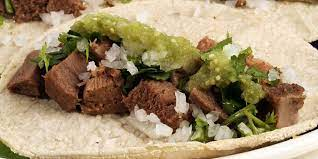

Tacos de barbacoa de lengua de res

Descripción
Es muy tradicional, en algunas ciudades del país, que los Domingos las familias tenga como
almuerzo barbacoa de res, ya sea de cabeza de res o de borrego. Esto depende en que parte
del país vivas. Ya sea que vayas con toda tu familia a comerla al local donde la venden o la
compres para llevar y disfrutar en casa. Casí siempre se disfruta en tacos acompañada de
cebolla y cilantro picados, sin olvidar unas buenas las salsas.
La manera más sencilla de hacer barbacoa en casa, es comprando lengua de res, ya que una vez
cocinada resulta en una carne muy suave y de mucho sabor. No es necesario agregar demasiadas
especias y heierbas de olor para que obtengas buenos resultados.
Ingredientes
- 1 lengua de res
- ¼ de cebolla mediana
- 4 dientes de ajo
- 1 hoja de laurel
- Sal al gusto
- Agua suficiente para cubrir la lengua de res.
Para servir
- 20 tortillas de maíz calientes
- 1 taza de cilantro picado
- 1 taza de cebolla blanca picada
- Salsa de tu elección.
Pasos
- Enjuaga la lengua de res con agua y colócala en la olla de cocción, agrega la cebolla,
el ajo, la hoja de laurel, la sal y el agua. Cubra y coloca la olla de lento cocimiento
a temperatura baja durante 8 horas. Cocina hasta que este suave. Si después de 8 horas
la carne no está lo suficientemente suave que se deshebre, cocínala un poco más. No todas
las ollas eléctricas funcionan igual.
- Retira la lengua de res de la olla de cocción lenta y colócala en un plato grande, retira
la piel con un cuchillo para hacer un corte al principio y deséchala. Recorta cualquier
tejido graso en el extremo inferior. Como se puede ver en las imágenes de arriba, es
principalmente carne.
- Deshebra con 2 tenedores o corta a tu gusto, colócala en un tazón para servir con un
poco del caldo donde se cocino el cual ya haya sido desgrasado y colado.